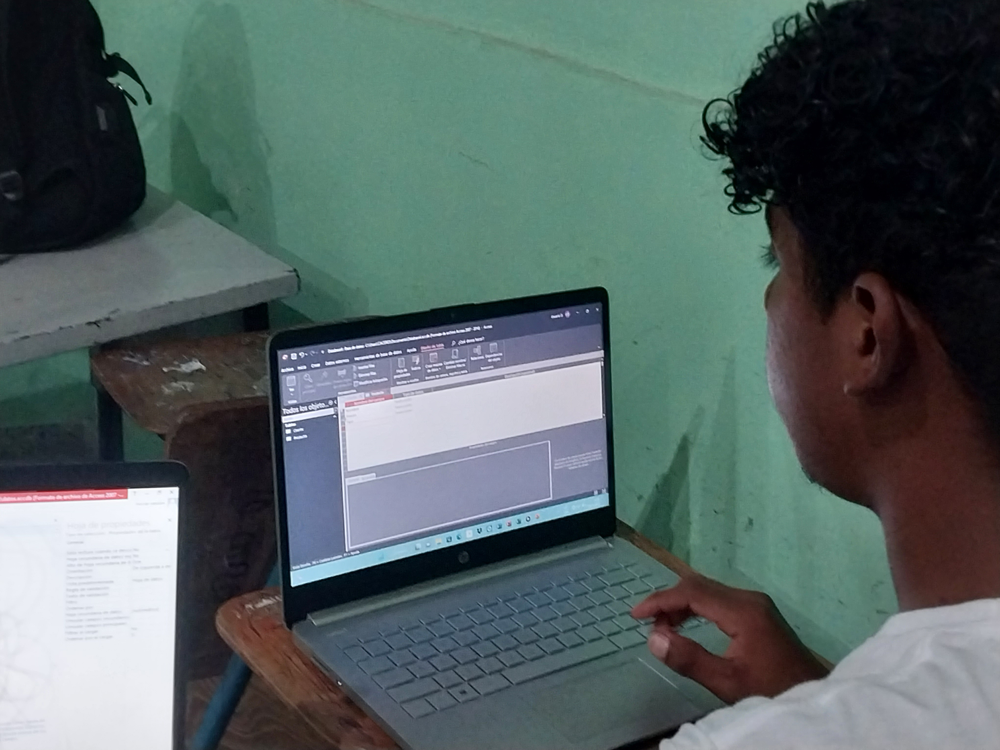

OFERTA ACADEMICA
¡INICIA TU PREPARACIÒN RUMBO AL EXITO AHORA!

Para nosotros "La educación es una factor que anima a crecer todos los sectores profesionales de
un país", se
abren a la innovación, hacen descubrimientos y basan todos sus valores en la formación de
estudiantes de
calidad para lograr un desarrollo social a futuro que supere todos los estándares. Para ello es
necesario descubrir nuevos talentos, aquellos individuos con ganas de sacar a relucir su talento o
intelecto y que destaquen todo su potencial a través de experiencias inolvidables durante su vida
educativa.
Es por ello que el Instituo Polivalente Santiago te ofrese las siguientes carreras para tu
superaciòn.
BTP EN INFORMÁTICA

Perfil del Egresado
El perfil contiene el conjunto de Conocimientos, habilidades, destrezas, actitudes y comportamientos
integrados que caracterizan las competencias técnicas específicas alcanzadas por el egresado de la
carrera de Bachiller Técnico Profesional en Informática.
Campo De Aplicación
El Bachiller Técnico en Informática se podrá desempeñar en:
Centros o departamentos de informática de cualquier institución o empresa, asistiendo al personal en el
uso de herramientas de ofimática, en el correcto funcionamiento del equipo así como en la creación de
programas que sean necesarios para el manejo de la información de las instituciones o empresas.
¡Disponible en la jornada Nocturna!
BTP CONTADURÍA Y FINANZAS

Perfil del Egresado
El Bachillerato Técnico en Administración y Servicios con Orientación en contaduría y Finanzas posee un
currículo que permite al educando interrelacionarse con los diferentes actores de la sociedad,
especialmente los orientados al campo laboral y en especial al área de las finanzas y la contabilidad,
este representa una oferta educativa, con base científica, tecnológica y humanista que habilita a los y
las egresadas para su integración de forma competente. Con éste se pretende brindar al joven hondureño
una formación profesional terminal y propedéutica, con autonomía para el consecutivo aprendizaje.
Campo de Aplicaciòn
El campo especifico de trabajo serán los departamentos de contabilidad, auditoria, finanzas, créditos y
cobros, administración, presupuesto, recursos humanos, caja, atención al cliente, producción y otros
áreas relacionadas con el quehacer contable;
Así también tendrá relación con entidades externas relacionadas con el puesto específico que éste ocupe
en cada empresa..
¡Disponible en la jornada Vespertina!
BACH. EN CIENCIAS Y HUMANIDADES

Perfil de Egresado
La carrera de Ciencias y Humanidades está orientada a capacitar al estudiante en las áreas de
las
ciencias naturales, matemáticas, química y física elemental. Además, obtendrá un amplio
conocimiento de las ciencias sociales y del uso y aplicación correcta de la expresión oral y
escrita del lenguaje. Todo esto con el propósito de hacerlos aptos para su ingreso y
desarrollo
en cualquier centro universitario.
Competencias
Apto/a, comprometido/a con el conocimiento y resolución de la problemática de su contexto, la
practica de la prevención integral y con promoción y defensa de la salud física, psicológica y
social del pueblo hondureño.
Acepta retos, toma decisiones, actúa con autonomía en forma responsable, para concertar y
converger con las demás personas, a fin de lograr el bien común.
De pensamiento critico, decodificador/a y evaluador/a de mensajes culturales que le permitan
generar nuevos conocimientos.
Demuestra autoestima positiva y es respetuoso/a, tolerante, optimista y abierto/a la
consideración de las ideas ajenas, al debate y acciones constructivas con sus semejantes.
¡Disponible en la jornada Vespertina!
Requisitos para poder Matricularte
1. Partida de nacimiento
2. Certificado del año anterior.
3. 3 fotografias tamaño carnet.
4. Llenar formulario en la administracion del Instituto
¡Ven y matriculate ya!
¡EDUCAR PARA REFUNDAR!